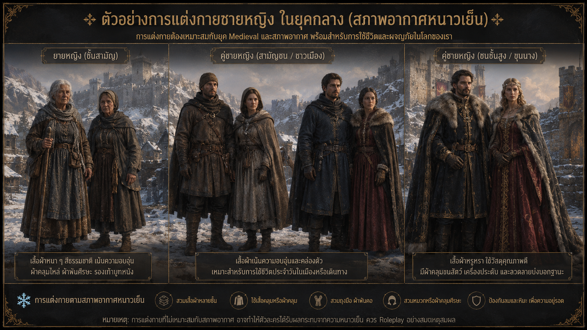

RULESMedieval Online RP · Thailand

Medieval Online RP TH เป็นเซิร์ฟเวอร์ Serious RP ที่ขับเคลื่อนด้วยเนื้อเรื่องและบทบาทที่มีคุณภาพ เราคาดหวังให้ผู้เล่นทุกคนมีคุณภาพการโรลเพลย์ระดับสูง การโรลเพลย์คุณภาพต่ำอาจทำให้ผู้เล่นถูกลงโทษโดนการแบนชั่วคราวหรือถาวร นี่ไม่ใช่ Red Dead Redemption Online
Common Courtesy (มารยาทพื้นฐานในการเล่นบทบาทสมมติ)
คือกฎสากลในคอมมูนิตี้ Roleplay (RP) ที่กำหนดให้ผู้เล่นต้องให้เกียรติซึ่งกันและกัน ทั้งในบทบาทตัวละคร (IC) และนอกบทบาท (OOC) เพื่อให้ทุกคนสนุกร่วมกันได้อย่างปลอดภัยและราบรื่น
หัวใจสำคัญของกฎ Common Courtesy
- ให้เกียรติผู้อื่น: ห้ามเหยียดหยาม ดูหมิ่น หรือใช้วาจาหยาบคายโจมตีผู้เล่นอื่น ไม่ว่าจะเป็นเรื่องเพศ วัย เสียง หรือตัวตนในชีวิตจริง กฎนี้ใช้ร่วมกับการสื่อสารใน Discord ของเซิฟเวอร์ เช่นกัน
- เคารพขอบเขต: ไม่บังคับหรือยัดเยียดบทบาทที่อีกฝ่ายไม่ยินยอม (เช่น การทำร้ายร่างกายสาหัสหรือเนื้อหาละเอียดอ่อน) ควรตกลงหรือเช็กโปรไฟล์ก่อนเริ่มเล่นบิ๊กซีน
- สร้างบรรยากาศที่ดี: ช่วยกันขับเคลื่อนเนื้อเรื่องในเชิงบวก ไม่หาเรื่องทะเลาะกันนอกบทบาท หรือทำลายบรรยากาศ (Breaking RP) ของผู้อื่น
- การออกจากเกม/ตัดบท: หลีกเลี่ยงการตัดตอนหรือหนีออกจากสถานการณ์กะทันหันในช่วงที่กำลังมีเรื่องราวสำคัญ (เช่น ช่วงเกิดคดีความ หรือก่อนเซิร์ฟเวอร์รีสตาร์ท) เพื่อไม่ให้อีกฝ่ายเสียอารมณ์
ห้ามมีพฤติกรรม เช่น
- ✕ ห้าม: ดูถูกหรือคุกคามผู้เล่นผ่านช่องทาง OOC
- ✕ ห้าม: ก่อกวนหรือ Spam
- ✕ ห้าม: จงใจสร้างความขัดแย้งในชุมชน
- ✕ ห้าม: ใช้ความขัดแย้ง IC เป็นเหตุผลในการกลั่นแกล้งผู้เล่น OOC
"ตัวละครสามารถเกลียดกันได้ แต่ผู้เล่นไม่จำเป็นต้องเกลียดกัน"
General Conduct (กฎทั่วไปและการปฏิบัติตัว)
- ความรับผิดชอบ: ใช้ดุลยพินิจให้ดีเสมอ การอ้างว่า "ไม่รู้กฎ" ไม่สามารถใช้เป็นข้อแก้ตัวได้
- การสอบถาม: หากมีข้อสงสัยเกี่ยวกับกฎ ให้เปิด Ticket เพื่อสอบถามทีมงาน
- อายุ: ผู้เล่นและตัวละครต้องมีอายุ 18 ปีขึ้นไป (หรือได้รับอนุญาต)
- มารยาท: ห้าม Toxic หรือสร้างดราม่าทุกช่องทาง และห้ามชักจูงผู้อื่นให้ทำผิดกฎ
- อำนาจตัดสินใจ: ทีมงานมีสิทธิ์ตัดสินชี้ขาดในทุกกรณี และห้ามอุทธรณ์แทนผู้อื่น
Roleplay Standards (มาตรฐานการเล่นสวมบทบาท)
- ต้องอยู่ในบทบาทตัวละครตลอดเวลา ห้ามพูดคุยเรื่องนอกเกม หากเกิดปัญหาในเกม ให้เล่นบทบาทนั้นจนจบสถานการณ์แล้วค่อยไป Report
- เครื่องมือ: ใช้อีโมท /me /do และ /ooc ให้เหมาะสมกับสถานการณ์
- การสื่อสาร: ต้องใช้ไมค์และ Voice Chat เป็นหลัก (ยกเว้นผู้เล่นได้รับการยกเว้นแล้วแต่กรณี จากทีมงาน)
ชื่อตัวละคร
ต้องเป็นชื่อจริง-นามสกุล ที่สมจริง ไม่ใช้ชื่อมีม ชื่อเล่น หรือชื่อตัวละครจากเกมอื่น/บุคคลจริง
- ✕ ห้าม: ชื่อมีม ชื่อเล่น
- ✕ ห้าม: ชื่อไม่เหมาะสม
- ✕ ห้าม: ชื่อจากบุคคลจริง ตัวละคร RDR โดยตรง
- ข้อยกเว้น: ชื่อคำเดียว (ต้องมีเหตุผลรองรับ), ชื่อที่ได้รับอนุมัติตามดุลยพินิจจากทีมงาน
Character Backstory and Starting Status
การนำเสนอตัวละครสำคัญในเนื้อเรื่องหลัก กลุ่มองค์กรที่ส่งผลกระทบต่อโลก หรือเหตุการณ์ขนาดใหญ่ที่มีอิทธิพลต่อโลก (โดยเฉพาะแนวเหนือธรรมชาติ) โดยไม่ได้รับการอนุมัติผ่าน ticket ล่วงหน้า จะถือเป็นความผิดที่สามารถถูกแบนได้ ไม่ว่าคุณจะมีเจตนาอย่างไรก็ตาม กฎนี้ครอบคลุมทั้งตัวละครและเนื้อเรื่อง คุณไม่สามารถสร้างตัวละครหรือเหตุการณ์ที่ส่งผลกระทบต่อโลกโดยรวม หรือเกี่ยวข้องกับ lore ระดับโลกที่ยังไม่ได้รับการอนุมัติได้ด้วยตัวเอง
ตัวละครของคุณต้องเริ่มต้นในฐานะ "คนธรรมดา" เท่านั้น ห้ามมีตำแหน่งขุนนาง เชื้อสายราชวงศ์ การยอมรับทางการเมือง หรืออำนาจใด ๆ อยู่ใน backstory ตั้งแต่เริ่มต้น และใบสมัครที่มีสิ่งเหล่านี้จะถูกปฏิเสธ
นอกเหนือจากการถูกปฏิเสธแล้ว สิ่งสำคัญคือคุณควรเข้าใจว่าทำไมเรื่องนี้จึงมีความสำคัญสำหรับตัวคุณในฐานะผู้เล่น ตัวละครที่เริ่มต้นมาพร้อมตำแหน่งหรืออำนาจ จะไม่มีเส้นทางให้เติบโต เพราะเรื่องราวของเขาถูกเขียนจบไปแล้วตั้งแต่ยังไม่เริ่ม
แต่ตัวละครที่เริ่มจากคนธรรมดา มีอาชีพ มีอดีต และมีเส้นทางเปิดกว้างรออยู่ข้างหน้า จะมีทุกอย่างให้ได้เล่นต่อ
ตำแหน่ง ชื่อเสียง และการยอมรับ ทั้งหมดนี้สามารถสร้างขึ้นได้ในโลกนี้ และการได้มันมาผ่านการเล่นต่อหน้าผู้คนที่เห็นทุกก้าว จะมีคุณค่ามากกว่าสิ่งที่เขียนไว้ในประวัติใด ๆ
ตัวละครที่น่าจดจำที่สุดในเซิร์ฟเวอร์นี้ ไม่ได้เริ่มต้นจากความยิ่งใหญ่ แต่พวกเขากลายเป็นคนสำคัญในภายหลัง
Character Customization Rules
ผู้เล่นทุกคนต้องสร้างตัวละครให้มีรูปลักษณ์ที่เหมาะสมกับโลกของเซิร์ฟเวอร์และสอดคล้องกับบริบทของยุค Medieval โดยการปรับแต่งตัวละครควรมีความสมเหตุสมผลและสนับสนุนการสวมบทบาท (Roleplay) ของตัวละครนั้น ๆ
1. ขอบเขตการปรับแต่งตัวละคร
ผู้เล่นสามารถปรับแต่งรูปลักษณ์ของตัวละครได้ตามระบบ Customization ที่เซิร์ฟเวอร์อนุญาต เช่น
- รูปทรงใบหน้า สีผิว และลักษณะทางกายภาพ
- ทรงผม หนวด และเครา
- รอยแผลเป็น รอยสัก หรือรายละเอียดบนร่างกาย หากเหมาะสมกับยุคและประวัติของตัวละคร
- เสื้อผ้า รองเท้า หมวก เครื่องประดับ และอุปกรณ์ประกอบการแต่งกาย
- การแต่งกายที่สะท้อนฐานะ อาชีพ เชื้อชาติ หรือภูมิหลังของตัวละคร
- การแต่งกายตามสภาพอากาศและสถานการณ์ภายในเกม
ผู้เล่นควรออกแบบตัวละครให้มีลักษณะสมจริงและสามารถอธิบายได้ภายในบทบาท หากมีผู้ดูแลเห็นว่ารูปลักษณ์หรือการแต่งกายของตัวละครไม่เหมาะสม ผู้ดูแลสามารถขอให้ผู้เล่นแก้ไข Character Customization หรือ ลงโทษตามสมควรตามดุลยพินิจของทีมงาน
2. การแต่งกายและสภาพอากาศ
ตัวละครต้องแต่งกายให้เหมาะสมกับสภาพอากาศและสถานที่ หากเลือกสวมใส่เสื้อผ้าที่ไม่เหมาะสม ผู้เล่นต้องสามารถ Roleplay ผลกระทบที่เกิดขึ้นได้อย่างสมเหตุสมผล
ตัวอย่างเช่น การเดินทางท่ามกลางหิมะโดยสวมเสื้อผ้าบางมาก ตัวละครควรแสดงให้เห็นถึงความหนาวเย็น ไม่ใช่ทำเหมือนไม่ได้รับผลกระทบใด ๆ

3. การปรับแต่งที่ถือว่าไม่เหมาะสม
การปรับแต่งตัวละครต่อไปนี้อาจถือว่าผิดกฎหรือไม่เหมาะสม และผู้ดูแลสามารถสั่งให้แก้ไขได้
- ✕ ห้าม: รูปลักษณ์ที่จงใจสร้างให้ดูผิดธรรมชาติหรือไม่สมเหตุสมผลกับโลกของเซิร์ฟเวอร์
- ✕ ห้าม: การแต่งกายที่เป็นสมัยใหม่หรือไม่สอดคล้องกับยุค Medieval
- ✕ ห้าม: การใช้เครื่องแต่งกายหรืออุปกรณ์ที่ทำให้ตัวละครดูเหมือนมาจากโลกหรือยุคอื่นโดยไม่มีเหตุผลทาง Roleplay
- ✕ ห้าม: การแต่งกายที่มีลักษณ์ล้อเลียน ก่อกวน หรือทำลายบรรยากาศของเซิร์ฟเวอร์
- ✕ ห้าม: การสร้างตัวละครที่มีรูปลักษณ์ผิดปกติอย่างรุนแรงเพียงเพื่อสร้างความตลกหรือเรียกร้องความสนใจ
- ✕ ห้าม: การใช้หน้ากากหรือสิ่งปิดบังใบหน้าโดยไม่มีเหตุผลที่สมเหตุสมผลภายในบทบาท
- ✕ ห้าม: การแต่งกายไม่เหมาะสมกับสถานการณ์ เช่น แต่งกายหรูหรามากในขณะที่อาศัยอยู่ในพื้นที่ยากจนโดยไม่มีเหตุผลรองรับ
- ✕ ห้าม: การใช้ Customization เพื่อสร้างตัวละครที่มีลักษณ์เป็น Meme หรือ Parody ของบุคคลจริง ตัวละครจากสื่ออื่น หรือวัฒนธรรมสมัยใหม่
สีผมที่ได้รับอนุญาตให้ใช้ภายในเซิฟเวอร์
Strict Prohibitions (กฎต้องห้าม)
1. Metagaming
ห้ามนำข้อมูลจากนอกเกม (Discord, Stream) มาใช้ในเกม ห้ามดูสตรีมคนอื่นขณะเล่น และห้ามใช้ข้อมูลหรือทรัพย์สินร่วมกันระหว่างตัวละคร (โอนของ) โดยไม่มีบทบาทในเกมรองรับ
- ✕ ห้าม: แชร์ข้อมูล IC ผ่านแพลตฟอร์มอื่น (Discord DM, สตรีม ฯลฯ)
- ✕ ห้าม: ดูสตรีมของผู้เล่นคนอื่นในเซิร์ฟเวอร์ขณะเล่น
- ✕ ห้าม: อยู่ใน voice channel กับผู้เล่นคนอื่นในเซิร์ฟเวอร์
- ✕ ห้าม: โอนของ เงิน หรือข้อมูลระหว่างตัวละครของตัวเอง หรือ ผู้อื่นโดยที่ไม่ได้มีบทบาทมาก่อน ยึดตามกฏสากล Roleplay
2. Powergaming
ห้ามกระทำสิ่งที่ในชีวิตจริงไม่สามารถทำได้ รวมถึงการใช้คำสั่ง /me /do ที่ขัดกับข้อจำกัดของโลกจริงหรือโลกที่เซิร์ฟเวอร์กำหนด รวมถึงการบังคับบทบาทกับผู้เล่นคนอื่นโดยแบบไม่เต็มใจ
ตัวอย่าง
- ✕ ห้าม: ตัวละครของผู้เล่นกระโดดจากหลังคาสูงลงสู่พื้น แล้วลุกขึ้นวิ่งต่อทันทีโดยไม่มีการแสดงอาการบาดเจ็บ
- ✕ ห้าม: บทบาทที่มีการ Interaction กับอีกฝ่ายตายทันที เช่น /me เขาใช้มีดเสียบไปที่คอของชายตรงหน้า ทำให้ตายทันที
- ✕ ห้าม: และการบังคับบทบาทของผู้เล่นอื่นที่ไม่ได้มอบทางรอดให้กับอีกฝ่าย
ทุกครั้งที่มีการ Interaction ในบทบาทต่ออีกฝ่าย คุณควรที่จะขออนุญาตอีกฝ่ายด้วยบทบาท
ตัวอย่าง:
- ✔ /me ล็อคไปที่คอของชายตรงหน้า /do สำเร็จหรือไม่?
- ✔ ฝ่ายที่ถูกกระทำจะต้องตอบโต้ทางบทบาทด้วยการ /do สำเร็จ หรือ /do ไม่สำเร็จ (โดยจะต้องบอกเหตุผลที่เหมาะสมและเป็นไปได้ในสถานการณ์นั้นๆ)
3. Deathmatching
Random Deathmatch (RDM): ห้ามฆ่า ตัวละครคนอื่นโดยไม่มีเหตุผลทางเนื้อเรื่อง ต้องมีการเปิดสถานการณ์ก่อนเสมอ และไม่ได้จำกัดแค่การฆ่าโดยตรง แต่รวมถึงกรณีที่ผู้เล่น: ยั่วยุอีกฝ่าย → ทำให้เกิดความขัดแย้ง → ใช้ความรุนแรง → อีกฝ่ายเสียชีวิต ดังนั้นการสร้างเหตุทะเลาะขึ้นมาเองเพื่อหาเหตุผลในการฆ่า ก็สามารถเป็น Deathmatching ได้
- ✕ ห้าม: ห้ามฆ่า ชนตัวละครอื่น โดยไม่มีเหตุผลทาง RP
- ✕ ห้าม: การโจมตี NPC โดยไม่มีเหตุผลก็ถือเป็น RDM
- ✕ ห้าม: ต้องมีเหตุผล RP ที่เหมาะสมมากพอ และมีการเปิดสถานการณ์ก่อนทำร้าย
- ✔ /me จับไปที่ดาบและฟันไปที่ชายตรงหน้า /do สำเร็จหรือไม่?
ตัวอย่าง:
Vehicle Deathmatch (VDM): ใช้พาหนะเป็นอาวุธได้เฉพาะเมื่อมีคนขวางเส้นทางหลบหนีอย่างสมเหตุสมผลเท่านั้น ยึดตามกฏสากล Roleplay
4. Bug Abuse and Exploiting
ผู้เล่นมีหน้าที่ รายงาน Bug และห้ามนำ Bug มาใช้เพื่อสร้างผลประโยชน์ที่ระบบไม่ได้ตั้งใจให้เกิดขึ้น และกฎยังต้องการให้ผู้เล่นเป็นส่วนหนึ่งของการรักษาความสมบูรณ์ของระบบด้วย
- ห้ามใช้ม็อด โปรแกรมโกง หรือบัคของเกมโดยเด็ดขาด
- ห้ามใช้ม็อดหรือโปรแกรมที่ไม่ได้รับอนุญาต
- ห้ามใช้บัคในเกมทุกกรณี
- ต้องรายงานบัคให้ทีมงาน หากพบเจอผู้เล่นที่ละเมิดกฏ exploit จะถูกแบนทันที
5. Offensive Roleplay (บทบาทที่น่ารังเกียจ)
จุดประสงค์ของกฎข้อนี้คือการสร้างสมดุลระหว่างการทำให้ผู้เล่นสามารถเล่นได้อย่างสบายใจและปลอดภัย กับการเปิดพื้นที่ให้ผู้เล่นยังคงมีอิสระในการ Roleplay ตามข้อจำกัด บทบาทที่ถูกจำกัดภายใต้กฎข้อนี้จะอยู่ภายใต้คำเรียกรวมว่า "Offensive Roleplay" หรือ การ Roleplay ที่มีเนื้อหาล่วงละเมิด/กระทบกระเทือน อย่างไรก็ตาม ไม่ได้หมายความว่า บทบาทที่ทำให้ผู้เล่นคนใดคนหนึ่งรู้สึกไม่พอใจ จะถือว่าเป็นสิ่งต้องห้ามทั้งหมด
บทบาทที่จะต้องขออนุญาตและยินยอมทั้งสองฝ่าย
ผู้เล่นทุกคนที่เกี่ยวข้องกับ Offensive RP ต้อง ยินยอมทุกคน หากผู้เล่นคนใดไม่ต้องการเข้าร่วมสามารถแจ้งได้ทาง OOC และ บทบาทนั้นต้องหยุดทันที
บทบาท Offensive RP จะต้องเกิดขึ้นในที่ลับตาคน และจะต้องจำกัดให้คนที่มีส่วนเกี่ยวข้องในบทบาทเท่านั้น เพื่อป้องกันคนเข้ามามีส่วนร่วมในบทบาทนั้นเพิ่มเติม
ตัวอย่าง
- ผู้เล่น A ต้องการทรมานตัวละคร B ก่อนเริ่มต้องตรวจสอบว่า B ยินยอมกับบทบาทประเภทนี้หรือไม่ ถ้า B ไม่ต้องการ ไม่สามารถบังคับให้ B เข้าร่วมฉากดังกล่าวได้
- ผู้เล่น A ต้องการทรมานตัวละคร B และผู้เล่น B ได้ตอบตกลงหรือยินยอมเข้าร่วม แต่ผู้เล่น C ไม่ยินยอมที่จะเข้าร่วมในฉากนั้น สามารถออกจากบทบาทตรงนั้นได้ โดยจะไม่สามารถรับรู้สิ่งที่เกิดขึ้นในฉากนั้นได้ และต้องไม่พยายามที่จะแอบดู หรือ แอบรับรู้ จะต้องอยู่ไกลจนไม่สามารถเห็น Text RP หรือ Textscene ได้
Offensive RP ได้แก่
- Torture (การทรมาน)
- การตัด/แยกส่วนร่างกาย (Dismemberment)
- การบรรยายบาดแผลอย่างละเอียดและรุนแรง (Graphic description of an injury)
- สวมบทบาทแนวโรแมนติกและอีโรติก (Romantic & Erotic RP)
Romantic & Erotic RP (การสวมบทบาทแนวโรแมนติกและอีโรติก )
- ห้ามมี Erotic Roleplay (ERP) บนพื้นที่สาธารณะ (Public Area) หรือ เผยแพร่บน Platform Live
- สามารถทํา Romantic RP ได้
- เนื้อหา NSFW ทุกประเภทต้องทำในที่ส่วนตัว
- ห้าม RP เกี่ยวกับการตั้งครรภ์ หรือ RP ที่เกี่ยวข้องกับทารกหรือเด็กบนเซิร์ฟเวอร์
บทบาท Offensive Roleplay ที่ห้ามทำโดยเด็ดขาด
- การเหยียดเชื้อชาติ การเหยียดเพศ (ในกรณีตั้งใจเหยียด OOC)
- การเหยียดรสนิยมทางเพศ การเหยียดคนข้ามเพศ (ในกรณีตั้งใจเหยียด OOC)
- การมีเพศสัมพันธ์กับสัตว์
- การโรลเพลย์ข่มขืน หรือการล่วงละเมิดทางเพศ
- การคุกคามทางเพศ
- การฆ่าเด็ก
- การโรลเพลย์การฆ่าตัวตาย
- การมีเพศสัมพันธ์กับศพ
- การค้าทาส การเป็นทาส (ต้องได้รับอนุญาติก่อนเท่านั้น เฉพาะภายใน IC)
- การคุกคามทุกรูปแบบ
- การโรลเพลย์เป็นผู้ที่สูญเสียอวัยวะอย่างถาวรตั้งแต่เริ่มต้น (เช่น แขน ขา มือ หรือดวงตาทั้ง 2 ข้าง)
- ความพยายามในการแบล็กเมล์ทุกรูปแบบ ยึดตามกฏสากล Roleplay แม้แต่การ "กล่าวหา" การกระทำเหล่านี้ใน IC ก็ไม่อนุญาต "ความสมจริงทางประวัติศาสตร์" ไม่สามารถใช้เป็นข้ออ้างได้ การนำเสนอประเด็นอ่อนไหวต้องทำด้วยความเคารพและความระมัดระวัง
Crime & Robbery Rules
อาชญากรรมทุกประเภทต้องดำเนินไปอย่างสมเหตุสมผล สอดคล้องกับตัวละคร บริบทของโลก และไม่ทำลายประสบการณ์ Roleplay ของผู้เล่นอื่น
Story RP Crime
Story RP Crime คือ "อาชญากรรมระดับเนื้อเรื่องหลัก" ที่มีผลกระทบใหญ่ต่อโลกของเซิร์ฟเวอร์ ไม่ใช่แค่เหตุการณ์เล็ก ๆ ทั่วไปแบบปล้นหรือทำร้ายกันธรรมดา เนื่องจากเป็นยุคกลาง อาชญากรรมขนาดใหญ่มีความเสี่ยงสูง และอาจนำไปสู่การถูกบังคับ Perma (ตายถาวร หรือ Character Kill)
รวมถึง
- การสังหารราชวงศ์ สภา ขุนนาง หรือ Maesters' Guild
- การแสดงพลังเวทมนตร์ เหนือธรรมชาติ หรือไสยศาสตร์อย่างชัดเจน
- อาชญากรรมใด ๆ ที่เข้าข่าย Story RP Crime แต่ไม่ได้รับการอนุมัติผ่าน ticket
การถูกเนรเทศ อาจถูกเสนอใน IC เป็นโอกาสสุดท้าย แต่ไม่ใช่สิ่งที่จำเป็นต้องมี หากฝ่าฝืนการเนรเทศ และถูกพบเจอใน IC จะถูกบังคับ Perma การกระทำของตัวละครคุณจะถือว่าเป็นการ "ยินยอม" ต่อผลลัพธ์ของ Story RP Crime เนื่องจากความพิเศษของเซิร์ฟเวอร์ หากคุณต้องการทำอาชญากรรมขนาดใหญ่ที่มีผลต่อเนื้อเรื่อง (เช่น การบุกยึดปราสาท การลอบสังหารราชวงศ์ หรือการแหกคุกหลวง) คุณจำเป็นต้องส่ง ticket และได้รับการอนุมัติจากทีมงานก่อน สิ่งนี้ช่วยให้โลกของเซิร์ฟเวอร์ยังคงดำเนินไปได้อย่างสมดุล ทุกไอเดียสามารถนำมาพิจารณาและพูดคุยกันได้
Crimes Near Restart
เพื่อป้องกันไม่ให้การ Restart ของเซิร์ฟเวอร์ส่งผลกระทบต่อ Crime RP จึงมีการจำกัดการก่ออาชญากรรมในช่วงเวลาก่อนและหลัง Restart ดังนี้
Mechanic-Based Crimesห้ามเริ่มหรือดำเนินการอาชญากรรมที่เกี่ยวข้องกับระบบเกม ภายในช่วง 30 นาที ก่อนและหลัง Restart เช่น
- Store Robbery
- Bank Robbery
Player / NPC Crimesห้ามเริ่มหรือดำเนินการอาชญากรรมที่เกี่ยวข้องกับระบบเกม ภายในช่วง 20 นาที ก่อนและหลัง Restart เช่น
- Kidnapping
- Robbery
- ก่ออาชญากรรม ต่อ ผู้เล่น หรือ NPCs
อย่างไรก็ตาม หากบทบาท หรืออาชญากรรมได้เริ่มต้นขึ้น ก่อนเข้าสู่ช่วงเวลาที่จำกัด ผู้เล่นสามารถดำเนินเหตุการณ์นั้นต่อจนจบได้ตามปกติ
ห้ามใช้ช่วงเวลา Restart เป็นช่องทางในการหลีกเลี่ยงผลของ Crime RP หรือยุติเหตุการณ์ที่กำลังดำเนินอยู่โดยไม่สมเหตุสมผล
Robbery Guidelines
การปล้นต้องมีเหตุผลทาง RP และต้องไม่ใช้ระบบเกมเพื่อกอบโกยทรัพย์สินของผู้เล่นคนอื่นเกินสมควร ต้องมีเหตุผลรองรับ ไม่ใช่เพียงเพราะ "อยากได้" ของผู้อื่น
กฎเพิ่มเติม
- การโจรกรรมหรือปล้นต้องมีเหตุผลที่สอดคล้องกับตัวละครและสถานการณ์ของ Roleplay
- ห้ามนำทรัพย์สินของผู้เล่นอื่นไปทั้งหมด ต้องเลือกสิ่งของอย่างสมเหตุสมผลและมีเหตุผลในการนำไป การ "ต้องการของสิ่งนั้น" เพียงอย่างเดียวไม่ถือเป็นเหตุผลที่เพียงพอ
- ห้ามปล้น ขโมย มากกว่า 2 Items / 2 ช่อง โดยไม่จำกัดจำนวนของไอเทมเหล่านั้น เช่น หากผู้ถูกปล้นมี ขนมปัง 4 ชิ้น เห็ด 3 ชิ้น เบอร์รี่ 3 ลูก ผู้ปล้นสามารถเลือกได้ 2 ใน 3 ของไอเทมเหล่านั้น โดยจะเลือกหยิบบางส่วน หรือทั้งหมด ของไอเทมเหล่านั้นได้
- ห้ามปล้นไอเทมที่มาจากการโดเนทกับทางเซิฟเวอร์ สามารถตรวจสอบไอเทมได้ตามข้อเสนอการโดเนทจากทางเซิฟเวอร์ กรณีที่เป็นไอเทมที่สามารถหาได้ภายในระบบของเซิฟเวอร์จะไม่ถูกยกเว้น
- ห้ามบังคับผู้เสียหายให้เข้าถึง Storage, Horse Saddle หรือ Camp เพื่อค้นหาและนำทรัพย์สินเพิ่มเติมออกมา
- การปล้นควรมุ่งไปที่ทรัพย์สินที่เหยื่อมีอยู่ในสถานการณ์นั้น และไม่ควรใช้การปล้นเพื่อกอบโกยทรัพย์สินของผู้เล่นจนเกินขอบเขตของ Roleplay
Valuing Life (VOL) / No Valuing Life (NVL) (ความสมจริงและการให้ค่าชีวิต)
NVL:ต้องให้ค่าชีวิตตัวละครเสมอ หากถูกปล้นหรืออยู่ในสถานการณ์ที่เสียเปรียบ ต้องยอมตามสถานการณ์
Wraithwinds:เป็นอันตรายถึงตาย ห้ามเข้าไปโดยไม่มีเหตุผล (สามารถถูก CK ตัวละคร) Wraithwinds เป็นพลังอันตรายถึงชีวิต ตัวละครไม่สามารถเดินทางผ่านมันได้ หากพบเจอ ตัวละครต้องถอยทันที หากไม่ทำจะถือว่าเป็น NVL (ไม่ให้ค่าชีวิตตัวละคร) แม้ว่าพายุนี้จะมีอยู่ในเนื้อเรื่อง (lore) ว่าสามารถเดินทางผ่านได้ และอาจถูกกล่าวถึงว่าเป็นสิ่งที่ตัวละครของคุณเคยผ่านมาก่อนจะมาถึงดินแดนนี้ แต่ไม่สามารถใช้เป็นเส้นทางในการเดินทางใน RP ปัจจุบันได้ ยกเว้นผ่านเส้นทางทางการที่กำหนดไว้เท่านั้น โปรดศึกษาจาก Server Lore เพิ่มเติม
หลีกเลี่ยง:ผู้เล่นต้องหลีกเลี่ยงการกระทำที่ ไม่สมจริงหรือเป็นการฆ่าตัวตายโดยไม่มีเหตุผล เช่น กระโดดจากหน้าผาสูงเพื่อหนีการต่อสู้
Duels (การดวล)
- ในการดวล หากไม่ได้ตกลงกันว่าจะเป็นการดวลแบบไม่ทำให้เกิดบาดแผล ผู้เล่นต้อง RP อาการบาดเจ็บตามสมควร เมื่อถูกโจมตี
- การดวลไม่ได้หมายความว่าตัวละครจะได้รับความเสียหายแล้วสามารถดำเนินชีวิตต่อไปเหมือนไม่มีอะไรเกิดขึ้น
- หากทั้งสองฝ่ายต้องการดวลเพื่อความสนุกโดย ไม่ต้องการให้เกิด Hit/Injury สามารถตกลงกันผ่าน /ooc ก่อนเริ่มดวล ว่าเป็น No Hit Duel
- การตกลง No Hit Duel ไม่ควรถูกนำมาใช้ภายหลังเพื่อปฏิเสธบาดแผลที่เกิดขึ้นจากการดวลที่เริ่มไปแล้ว
อาการบาดเจ็บ:ต้องแสดงอาการบาดเจ็บต่อเนื่อง ไม่ใช่แค่ในฉากเดียว หากแขนขาหักห้ามวิ่ง หากตาบอดต้องสวมบทบาทนั้นตลอดไป
New Life Rule (NLR) (PK) (กฎของชีวิตใหม่)
เมื่อคุณ Respawn หลังจากตัวละครเสียชีวิต ผู้เล่นต้องปฏิบัติตามหลัก New Life Rule เพื่อรักษาความต่อเนื่องและความสมเหตุสมผลของ Roleplay
1. หลังจาก Respawn
- หลีกเลี่ยงการกลับไปยังพื้นที่ที่ตัวละครเสียชีวิต ตราบเท่าที่สามารถทำได้อย่างสมเหตุสมผลภายใน Roleplay
- ผู้เล่นต้อง Roleplay อาการบาดเจ็บ ให้สอดคล้องกับเหตุการณ์ที่เกิดขึ้น
- หากตัวละครอยู่ในสถานะ Downed / Incapacitated ห้ามสื่อสารหรือแสดงพฤติกรรมราวกับว่าตัวละครไม่ได้รับบาดเจ็บหรือยังสามารถดำเนินการต่าง ๆ ได้ตามปกติ
2. การจดจำเหตุการณ์ก่อนเสียชีวิต
หลังจาก Respawn ตัวละครจะไม่สามารถจดจำเหตุการณ์ที่เกี่ยวข้องกับการเสียชีวิตของตนเองได้ เว้นแต่จะเข้าเงื่อนไขดังต่อไปนี้
- คุณเกิดใหม่ที่โรงหมอ
- ผู้ที่เป็นฝ่ายโจมตีให้ความยินยอมให้สามารถจำเรื่องราวได้
- กรณีพิเศษจากทางทีมงาน หากคุณเป็นคนฆ่าใคร ห้ามพาตัวเขาไปที่ โรงหมอ เพื่อชุบชีวิตเพื่อเล่น RP ต่อ เว้นแต่เขาจะยินยอม
3. ข้อยกเว้นสำหรับ Guards
กรณีตัวละครอยู่ภายใต้การควบคุมตัวของ Guard การถูกทำให้หมดสติหรือ Incapacitated ไม่ถือเป็นการสิ้นสุดของการควบคุมตัว
การควบคุมตัวยังคงดำเนินต่อเนื่องตั้งแต่ช่วงที่ตัวละครหมดสติไปจนถึงการนำตัวเข้าสู่กระบวนการพิจารณาและพิพากษา เว้นแต่จะมีบุคคลอื่นเข้ามาช่วยเหลือและปลดปล่อยตัวละครออกจากการควบคุมตัว
4. ข้อยกเว้นสำหรับ Licensed Bounty Hunters
Licensed Bounty Hunters สามารถนำตัว Bounty ที่อยู่ในสถานะ Incapacitated ไปส่งมอบให้แก่เจ้าหน้าที่ที่เกี่ยวข้องได้
หากไม่มี Guard หรือ King อยู่เพื่อรับตัว Bounty Hunters จะต้อง ปล่อยตัว Bounty นั้น
New Life Rule มีขึ้นเพื่อป้องกันไม่ให้การเสียชีวิตและ Respawn กลายเป็นเพียงการรีเซ็ตสถานการณ์ โดยผู้เล่นต้องให้ความสำคัญกับ ความสมจริงของการบาดเจ็บ ความต่อเนื่องของ Roleplay และข้อจำกัดด้านความทรงจำของตัวละคร การที่ตัวละครเสียชีวิตไม่ได้หมายความว่าผู้เล่นจะสามารถนำข้อมูลที่ตนเองรู้ในฐานะผู้เล่นกลับมาใช้เป็นข้อมูลของตัวละครได้
Reportin (การรายงาน)
การรายงาน (Report) ต้องถูกส่งโดยผู้เล่นที่ได้รับผลกระทบโดยตรงเท่านั้น การรายงานแทนผู้อื่น หรืออ้างอิงจากข้อมูลมือที่สอง จะถูกปิดโดยไม่มีการดำเนินการใด ๆ จำเป็นต้องมีหลักฐานเป็นวิดีโอคลิป ไม่รับรายงานจากผู้ชม หากคุณส่งรายงานหรือเปิด ticket เกี่ยวกับเหตุการณ์หรือฉาก RP เพราะเชื่อว่ามีการละเมิดขอบเขต คุณจะต้อง "ยุติการมีส่วนร่วม" กับสถานการณ์นั้นทันที คุณไม่สามารถนำเรื่องนั้นไปพูดถึงใน IC ต่อ, กระจายข่าวลือ, ตามหาผู้เล่นที่เกี่ยวข้อง หรือมีส่วนร่วมในลักษณะใด ๆ ที่ทำให้สถานการณ์ยืดเยื้อหรือกลับมาเกิดขึ้นอีก การส่งรายงาน หมายความว่าคุณเชื่อว่าสิ่งที่เกิดขึ้น "เกินขอบเขต" แล้ว การกลับไปมีส่วนร่วมอีกหลังจากส่งรายงาน ถือว่าเป็นการขัดแย้งกับสิ่งที่คุณอ้าง คุณไม่สามารถบอกว่าฉากนั้นเป็นอันตราย ไม่เหมาะสม แล้วกลับไปเล่นต่อด้วยความสมัครใจได้ หลักฐานที่ส่งในการรายงาน จะถูกพิจารณานับตั้งแต่ช่วงเวลาที่เปิดรายงานเท่านั้น เหตุการณ์ที่เกิดขึ้น "หลังจาก" การส่งรายงาน โดยเฉพาะกรณีที่ผู้รายงานยังคงเข้าไปมีส่วนร่วม หรือหยิบยกประเด็นเดิมขึ้นมาอีก จะไม่ถูกนับเป็นความผิดเพิ่มเติมของผู้ถูกรายงาน หากพบว่าผู้เล่นมีการรายงาน แล้วจงใจ "ล่อ" หรือยั่วยุให้ผู้ถูกรายงานกลับมาเกิดพฤติกรรมเดิมอีกครั้ง การกระทำดังกล่าวจะถือว่าเป็นการทำผิดกฏด้วยตัวมันเอง
การรายงาน: ต้องเป็นผู้เสียหายโดยตรงที่ส่งรายงานพร้อมหลักฐานวิดีโอคลิปเท่านั้น หากส่งรายงานแล้ว ต้องยุติการมีส่วนร่วมในเหตุการณ์นั้นทันที
Fail RP
Fail RP หมายถึง การกระทำหรือพฤติกรรมที่ไม่สมเหตุสมผล ขัดต่อบริบทของโลกภายในเซิร์ฟเวอร์ หรือทำให้คุณภาพและความต่อเนื่องของ Roleplay ลดลง ผู้เล่นทุกคนมีหน้าที่รักษาความสมจริงและเปิดโอกาให้ผู้เล่นอื่นสามารถดำเนิน Roleplay ต่อได้อย่างเหมาะสม
การสร้างตัวละคร: ทุกคนต้องเริ่มเป็น "คนธรรมดา" ห้ามมีตำแหน่งขุนนางหรืออำนาจพิเศษในประวัติเริ่มต้น เพื่อเปิดโอกาสให้ตัวละครได้เติบโตในโลกของเซิร์ฟเวอร์
ตัวอย่าง Fail RP
- Guard Baiting: ยั่วยุยาม การ์ดโดยไม่มีเหตุผล
- Combat Logging: ออกจากเกมระหว่างดำเนินบทบาท RP
- Force Perma: บังคับให้ตัวละครอื่นบาดเจ็บหรือเสียชีวิตโดยไม่มีการยินยอม
- Fake Hostages: ตัวประกันต้องเป็นสถานการณ์จริง จำกัดสูงสุด 4 คนต่อเหตุการณ์
- Torture RP: ต้องได้รับความยินยอม OOC อย่างชัดเจน (ความเงียบไม่ถือว่าเป็นการยินยอม)
- Self-Harm RP: ไม่อนุญาต
- Supernatural RP: ความเชื่อสามารถมีได้ แต่พลังพิเศษห้ามมี เว้นแต่ได้รับอนุมัติจากทีมงาน ต้องเปิด ticket และอธิบายเหตุผลของพลังหรือ "ความสามารถพิเศษ"
- Bodily Fluids: ห้ามใช้อีโมทในลักษณะที่ไม่เหมาะสม
- Notice Board: ต้องอยู่ใกล้บอร์ดภายในเกมจึงจะสามารถโพสต์ อ่านได้
- Spawn Camping: ไม่อนุญาตทุกกรณี
- NPC Blaming: ห้ามอ้างว่า NPC เป็นผู้สร้างหรือเผยแพร่ข้อมูล IC ทุกรูปแบบ
- Timelock: เซิร์ฟเวอร์ถูกกำหนดให้อยู่ในปี ค.ศ. 1300 และเป็นโลกสมมติ
- Instancing: ห้ามใช้จุดวาร์ป โซนเทเลพอร์ตเพื่อหนีหรือหลบระหว่างสถานการณ์ขัดแย้ง
- Pacing: ต้องเว้นช่วงเวลาระหว่างการก่อเหตุรุนแรงทุกครั้งไม่ว่าจะเป็นการปะทะหรือปล้นและอื่นๆ
- Powergaming: ห้ามบังคับผลลัพธ์หรือจำกัดการตัดสินใจของผู้เล่นคนอื่น
- Injuries: ต้องแสดงอาการบาดเจ็บอย่างสมจริงและต่อเนื่อง การรักษาไม่ได้จบลงทันทีหลังจากหมอเล่นจบฉาก
- RP it out: หากไม่มีระบบสำหรับสิ่งที่ตัวละครคุณทำ ให้ใช้ emote และ /me เพื่อสร้างฉากขึ้นมาเอง ยึดตามกฏสากล Roleplay
Immersive Movement
คือ กฎและแนวทางปฏิบัติเกี่ยวกับการเคลื่อนไหวร่างกาย ท่าทาง และการใช้ชีวิตของตัวละคร (In Character - IC) ให้สมจริง สอดคล้องกับสถานการณ์รอบตัวและขีดจำกัดของมนุษย์ปกติ เพื่อสร้างบรรยากาศที่สมจริงและให้เกียรติผู้เล่นคนอื่น
กฎการเคลื่อนไหวและการใช้ชีวิตพื้นฐาน
- ความสมจริงทางกายภาพ: เดินหรือวิ่งให้เข้ากับสภาพแวดล้อม ไม่กระโดดไปมาอย่างไร้เหตุผล
- การหลีกเลี่ยง Power Gaming (PG): ห้ามบังคับท่าทางเคลื่อนไหวที่เกินมนุษย์ เช่น โดนฟันแล้ววิ่งต่อได้ทันทีโดยไม่แสดงอาการเจ็บ หรือปีนขึ้นที่สูงด้วยมือเปล่าในพริบตา
- การตอบสนองต่อสิ่งแวดล้อม: ต้องเดินระมัดระวังเมื่ออยู่ในพื้นที่อันตราย หมอบคลาน หลบหลังกำแพงเมื่อเจอเหตุอันตราย หรือหยุดรอเมื่อเหนื่อย
ผู้เล่นต้องแสดงพฤติกรรมและการเคลื่อนไหวของตัวละครให้สอดคล้องกับการใช้ชีวิตจริงในยุคกลาง โดยไม่ควรวิ่งหรือเคลื่อนที่ด้วยความเร็วสูงตลอดเวลาโดยไม่มีเหตุผลรองรับ
ในชีวิตจริงของยุคกลาง การเดินถือเป็นการเคลื่อนที่ตามปกติสำหรับการเดินทางและการทำกิจวัตรทั่วไป ส่วนการวิ่งควรเกิดขึ้นเมื่อมีเหตุผลที่เหมาะสม เช่น การหลบหนีจากอันตราย การไล่ล่า การเดินทางอย่างเร่งด่วน การช่วยเหลือผู้อื่น หรือสถานการณ์ที่จำเป็นต้องเคลื่อนที่อย่างรวดเร็ว
ผู้เล่นไม่ควรวิ่งไปทุกสถานที่โดยไม่มีเหตุผล เพียงเพื่อประหยัดเวลา หรือใช้การวิ่งเป็นพฤติกรรมปกติของตัวละคร เพราะอาจทำให้บรรยากาศและความสมจริงของโลกยุคกลางเสียไป
Combat & Injury
การต่อสู้ไม่ควรถูกมองเป็นเพียง Gameplay หากตัวละครได้รับบาดเจ็บอย่างรุนแรง ผู้เล่นต้องแสดงอาการให้เหมาะสมกับสถานการณ์
ถูกฟันที่แขน
- ✕ วิ่งต่อเหมือนไม่มีอะไรเกิดขึ้น
- ✔ ลดการใช้งานแขน / แสดงอาการเจ็บ / ขอความช่วยเหลือ
ถูกฟันจนหมดสติ
- ✕ ลุกขึ้นมาสู้ต่อทันที
- ✔ Roleplay เป็นผู้บาดเจ็บหรือหมดสติ ตามสถานการณ์
Accidents
อุบัติเหตุที่เกิดจากการเล่นต้องได้รับการ Roleplay เช่นเดียวกับเหตุการณ์อื่น
ข้อยกเว้น หากเหตุการณ์เกิดจากปัญหาทางเทคนิค เช่น Desync หรือ Bug ผู้เล่นที่เกี่ยวข้องสามารถตกลงยกเลิกเหตุการณ์ได้ หากทุกฝ่ายเห็นตรงกัน หากไม่สามารถตกลงกันได้ ให้ดำเนินการตามขั้นตอน Staff Report
ตัวอย่างเช่น "ไม่เอา ๆ ฉันไม่เล่นฉากนี้" "เดี๋ยว ขอออกเกมก่อน" "เรื่องนี้ผิดกฎ!" "อันนี้ขอไม่เล่นนะไม่สบายใจที่จะเล่น" ในขณะที่สถานการณ์กำลังดำเนินอยู่ หากพบว่าผู้เล่นอีกฝ่ายทำผิดกฎ ให้ ดำเนินสถานการณ์ต่อเท่าที่สามารถทำได้ แล้วรายงาน Staff ภายหลัง หรือใช้ช่องทางที่ Staff กำหนดโดยไม่ทำลาย RP
Hostile Group Limits
- ต่อสู้ได้สูงสุด 5 คน ในการปะทะหนึ่งครั้ง (ยกเว้นหน่วยกฎหมาย)
- รวมกลุ่มได้ทั้งหมดไม่เกิน 10 คน
- งานรวมตัวขนาดใหญ่ทำได้ แต่ต้องกำหนด 5 คนสำหรับการต่อสู้ คนอื่นที่ไม่เกี่ยวข้องกับเรื่องราวต้องถอย
- หากถูกโจมตี มีเพียง 5 คนเท่านั้นที่สู้กลับได้ นอกนั้นต้องถอย
- หน่วยกฎหมายสามารถตอบสนองสถานการณ์ได้สูงสุด 5 คน ในสถานการณ์ การปล้น การลักพาตัว การสืบสวน การตอบสนองการแจ้งเหตุจากบุคคล และการล่าค่าหัว (Bounty)
- ระหว่างการต่อสู้ หากการต่อสู้ระหว่าง 5v5 ฝ่ายหนึ่งฝ่ายใด จำนวนลดลง ไม่สามารถเพิ่มจำนวนผู้ต่อสู้ (Combatant) ได้ทันที
Articles of Skirmish and Lesser War (กฎว่าด้วยการประลองรบและสงครามขนาดเล็ก)
Articles of Skirmish and Lesser War เป็นกติกาที่ผู้เล่นสามารถนำมาอ้างอิง IC เมื่อต้องการจัดการต่อสู้หรือสงครามระหว่างกลุ่มให้มีขอบเขตที่ชัดเจน เป็นธรรม และสร้างความสนุกให้กับทุกฝ่าย
ในกรณีที่ทั้งสองฝ่ายกำลังอยู่ในขั้นตอน Parley (การขอเจรจา) สามารถหยิบยก "Rules of Skirmish" ขึ้นมาเพื่อเจรจาและกำหนดรายละเอียดของการรบก่อนที่จะเริ่มการต่อสู้ได้
1. Parley and Accord (การเจรจาและข้อตกลง)
การรบอย่างเป็นทางการที่ต้องการมีจำนวนผู้เข้าร่วม เกินกว่า Hostile Group Limits ปกติ จะต้องเริ่มต้นจากการทำ Parley
ทั้งสองฝ่ายต้องเจรจาและตกลงร่วมกันเกี่ยวกับ:
- สาเหตุของความขัดแย้ง
- เงื่อนไขของการรบ
- จำนวนผู้เข้าร่วม
- ขอบเขตของความขัดแย้ง
- สถานที่และระยะเวลาของการรบ
- เงื่อนไขแห่งชัยชนะและผลลัพธ์ของสงคราม
ข้อตกลงทั้งหมดต้องได้รับการยอมรับจากทั้งสองฝ่าย ก่อนที่จะชักดาบหรือเริ่มการรบ
2. Field of Battle (สนามรบ)
ทั้งสองฝ่ายสามารถตกลงเลือกสถานที่ใดสถานที่หนึ่งให้เป็น สนามรบ (Field of Battle) ได้
เมื่อสถานที่ดังกล่าวได้รับการประกาศและตกลงร่วมกันแล้ว กฎของ Skirmish จะมีผลบังคับใช้ภายในพื้นที่นั้นเป็นระยะเวลาสูงสุด 3 วันเต็มตามเวลา OOC ทั้งสองฝ่ายสามารถตกลงกำหนดระยะเวลาให้สั้นกว่า 3 วันได้
3. Arms and Station (อาวุธและฐานะของผู้เข้าร่วม)
อาวุธและเครื่องป้องกันที่ใช้ในการรบต้องเหมาะสมกับ ตามยศ ฐานะ ตำแหน่ง และสถานะของตัวละครภายใน Faction การแต่งกายและอุปกรณ์ของผู้เข้าร่วมควรสะท้อนสถานะของตัวละครและไม่ควรถูกใช้เพื่อสร้างความได้เปรียบที่ไม่สมเหตุสมผล
การรบที่เกิน 5v5: การรบที่มีจำนวนผู้เข้าร่วม มากกว่า 5v5 จะไม่อนุญาตให้ใช้ ธนู (Bows) ข้อกำหนดนี้มีไว้เพื่อช่วยลดปัญหา Desync ควบคุมจังหวะของการต่อสู้ และป้องกันไม่ให้การรบขนาดใหญ่กลายเป็นการเล่นที่เน้นรูปแบบการยิงมากเกินไป
4. Numbers and Healers (จำนวนผู้เข้าร่วมและ Healer)
การรบแต่ละครั้งสามารถมีผู้เข้าร่วมได้สูงสุด 10 คนต่อฝ่าย (10v10) ทั้งสองฝ่ายสามารถตกลงร่วมกันให้ใช้จำนวนที่น้อยกว่าได้ โดยจำนวนผู้เข้าร่วมของทั้งสองฝ่ายควรเป็นจำนวนที่เท่ากัน
แต่ละฝ่ายสามารถมี Healer ได้ 1 คนเพิ่มเติม เช่น เท่ากับ 10+1 หน้าที่หลักของ Healer คือการรวบรวมและดูแลผู้ได้รับบาดเจ็บ หลังจากการรบในแต่ละรอบสิ้นสุดลงเท่านั้น
โดยปกติ Healer ไม่มีหน้าที่เข้าไปต่อสู้ และไม่ควรเข้าร่วมการรบในฐานะ Combatant
หากทั้งสองฝ่ายตกลงให้ Healer สามารถรักษาผู้บาดเจ็บ ระหว่างการต่อสู้ ได้ Healer จะถูกนับเป็น Combatant และต้องรวมอยู่ในจำนวนผู้เข้าร่วมทั้งหมด ในกรณีนี้ไม่สามารถใช้ 10+1 ได้ และจะต้องตกลงและใช้เหมือนกันทั้งสองฝ่าย
เมื่อทั้งสองฝ่ายประกาศรายชื่อหรือจำนวน Combatants แล้ว จะไม่สามารถนำบุคคลที่ไม่ได้อยู่ในรายชื่อหรือไม่ได้รับการประกาศมาก่อนเข้ามาแทนที่ตำแหน่งของ Combatant ที่กำลังทำการรบอยู่
5. Survival (การเอาชีวิตรอดและบาดแผล)
ผู้เข้าร่วมสามารถใช้ Healing Supplies (ไอเทมเพิ่ม HP) ระหว่างการรบเพื่อช่วยชะลออาการบาดเจ็บหรือยืดระยะเวลาที่ตัวละครยังสามารถต่อสู้ต่อไปได้ อย่างไรก็ตาม การใช้ Healing Supplies ไม่ได้ทำให้บาดแผลหายไป
บาดแผลที่เกิดขึ้นระหว่างการต่อสู้ต้องถูกนำไป Roleplay ต่อ และจะต้องได้รับการรักษาอย่างเหมาะสมโดย Healer หลังจากการรบสิ้นสุดลง ผู้เล่นต้อง Roleplay ผลกระทบของบาดแผลอย่างต่อเนื่องตามความรุนแรงของอาการ
6. Horse and Rider (ม้าและผู้ขี่)
ม้าจะถูกนับเป็น Combatant การรบแบบเต็มรูปแบบบนหลังม้าสามารถจัดขึ้นได้สูงสุด 6 Riders ต่อ 6 Riders (6v6)
สำหรับ Combatant ที่เดินทางมายังสนามรบด้วยม้า เมื่อมาถึงสนามรบจะต้อง:
- ลงจากม้าในระยะห่างจากสนามรบ
- ส่งม้าออกจากพื้นที่
- เดินเข้าสู่สนามรบด้วยเท้า
เว้นแต่ผู้ขี่จะได้รับการประกาศและนับเป็น 2 Combatants (ผู้ขี่ 1 และม้า 1) ตั้งแต่ก่อนเริ่มการรบ จึงจะสามารถอยู่บนหลังม้าภายในสนามรบได้ ข้อกำหนดดังกล่าวมีขึ้นเนื่องจากม้ายังคงมีผลต่อจำนวน Object และปัญหาด้าน Instancing / Performance ดังนั้น Combatant ที่กำลังขี่ม้าจึงถือว่ามีค่าเท่ากับ 2 Combatants
7. Captivity and Chivalry (เชลยศึกและเกียรติแห่งการรบ)
หากการรบถูกกำหนดให้ดำเนินต่อเนื่องเป็นเวลานานกว่าการต่อสู้เพียงครั้งเดียว หรือกินเวลามากกว่าหนึ่งวัน จะถือว่าการต่อสู้ดังกล่าวเป็น การรบแห่งเกียรติยศ
ผู้เข้าร่วมการรบจะไม่สามารถถูกจับเป็นเชลยระหว่างการต่อสู้ได้ การจับตัวผู้เข้าร่วมเป็นเชลยจะถือเป็นการละเมิดเงื่อนไขและขอบเขตที่ทั้งสองฝ่ายได้ตกลงกันไว้ใน Parley และถือเป็นการเปลี่ยนแปลงลักษณะของความขัดแย้งจากที่ได้ตกลงกัน
การพยายามจับตัวผู้เข้าร่วมเป็นเชลยในกรณีดังกล่าวจะถือเป็นการละเมิด Chivalric Conduct และอาจทำให้ข้อตกลงแห่งการรบถือเป็นโมฆะ
8. Victory (การตัดสินชัยชนะ)
หากฝ่ายใด ถอนกำลังออกจากสนามรบทั้งหมดระหว่างการต่อสู้ จะถือว่าฝ่ายนั้นยอมแพ้ในการรบครั้งดังกล่าว และชัยชนะจะตกเป็นของฝ่ายตรงข้าม
การรบหนึ่งครั้งถือว่าจบลงเมื่อเหลือ Combatants ที่ยังสามารถต่อสู้ได้อยู่ฝ่ายเดียว
สำหรับ Skirmish ที่มีการต่อสู้หลายครั้งตลอดระยะเวลาที่กำหนด:
- ฝ่ายที่ชนะในแต่ละ Battle จะได้รับ 1 Mark
- เมื่อการรบทั้งหมดตามข้อตกลงสิ้นสุดลง ฝ่ายที่มี Mark มากกว่าอีกฝ่ายจะเป็นผู้ชนะ Skirmish
- ฝ่ายชนะจะได้รับผลประโยชน์และเงื่อนไขทั้งหมดที่ตกลงกันไว้ใน Parley
- เมื่อเงื่อนไขของข้อตกลงได้รับการตัดสินแล้ว ความขัดแย้งดังกล่าวจะถือว่ายุติลงตาม Rights of Arms
Final Notes
จงสวมบทบาทด้วยความเคารพ ความสมจริง อย่างมีวุฒิภาวะ
การกระทำของคุณจะเป็นตัวกำหนดโลก จงทำให้เรื่องราวของคุณกลายเป็นตำนาน
ทีมงานขอสงวนสิทธิ์ในการดำเนินการตามความเหมาะสม เมื่อมีการละเมิดกฎ กฎที่ดีที่สุดและยึดหลักมากที่สุดคือกฏ Roleplay สากลทั่วไปที่ทั่วโลกใช้กัน
คำตัดสินของทีมงานถือเป็นที่สุด ผู้ที่ได้รับการตัดสินสามารถเปิด Ticket เพื่อร้องขอการอุธรณ์ได้
ค.ศ. 1300 เพื่อให้คุณนึกภาพได้ว่า ช่วงเวลานั้น สภาพแวดล้อม สังคม วัฒนธรรมจะเป็นตามช่วงเวลานั้น
ภายในเกมศาสนา คำสอนศาสนาตามชีวิตจริง จะไม่ถูกพูดถึงหรืออ้างถึง เช่น ค.ศ. (คริสต์ศักราช) ก็เช่นกัน จะใช้เพียงแค่ ปี 1300
ไม่อนุญาตให้นำคำสอนของศาสนาในชีวิตจริงมาใช้เพื่อเป็นบทบาทภายในเซิฟเวอร์